1. Halmazelmélet és alapvető logika
Mi ez és mire jó?
Képzeld el a halmazokat úgy, mint dobozokat, amikbe különböző dolgokat pakolunk. A halmazelmélet arról szól, hogyan tudjuk ezeket a dobozokat összehasonlítani: mi van mindkettőben, mi van csak az egyikben. Kiválóan alkalmas adatok rendszerezésére.
A kulcsfontosságú képletek és szabályok
- A ∪ B (Unió / Egyesítés): Mindenki, aki benne van az A-ban VAGY a B-ben (vagy mindkettőben).
- A ∩ B (Metszet): Csak azok, akik MINDKÉT halmazban benne vannak.
- A \ B (Különbség): Akik benne vannak az A-ban, KIVÉVE azokat, akik a B-ben is.
Típusfeladat és lépésenkénti megoldás
Feladat: Egy osztályban 30 diák van. Ebből 22-en szeretik a matekot, 17-en a fizikát. Mindenki szereti legalább az egyiket. Hányan szeretik mindkettőt?
- Rajzolj: Két egymást metsző kört (Venn-diagram).
- A "túlcsordulás" trükkje: 22 + 17 = 39. De csak 30 diákunk van!
- Számolj: 39 - 30 = 9. Ez a 9 ember a "többlet", ők szeretik mindkettőt.
- Töltsd ki a diagramot: Írd a metszetbe a 9-et. "Csak matek": 22 - 9 = 13. "Csak fizika": 17 - 9 = 8.
2. Gráfelmélet
Mi ez és mire jó?
A gráf nem más, mint pöttyök (csúcsok) és azokat összekötő vonalak (élek) rajza. Az érettségin az I. részben szokott szerepelni egy rövid rajzolós feladatként.
A kulcsfontosságú képletek és szabályok
- Fokszám: Azt mutatja meg, hogy egy adott pöttyből (csúcsból) hány vonal (él) indul ki.
- A "Kézfogás-lemma": A gráfban a fokszámok összege mindig páros szám.
Típusfeladat és lépésenkénti megoldás
Feladat: Rajzoljon egy olyan ötpontú gráfot, amelyben a pontok fokszáma 1, 2, 2, 3, 4.
- Tegyél le a papírra 5 pontot kör alakban.
- Kezdd a legnagyobbal: A 4-es fokszámú pontból húzz vonalat az összes többi pontba.
- Vizsgáld a legkisebbet: Az 1-es fokszámú pontunk már kész is van, mert az előbb kapott egy vonalat. Ide tilos több vonalat húzni!
- Köss össze további pontokat addig, amíg be nem állnak a 2, 2, 3 értékek.
3. Számtani és mértani sorozatok
Mi ez és mire jó?
A sorozatokat képzeld el egy számsorozatként, ahol egy bizonyos szabály szerint lépkedünk előre. Vigyázat: Nem mindig írják le a feladatban a "számtani" vagy "mértani" szót! Figyeld az utalásokat:
- Számtani sorozat: Olyan, mint egy egyenletes lépcsősor. Mindig
ugyanannyit adunk hozzá (vagy vonunk ki).
Példa az érettségiről: "A tanfolyam ára minden héten ugyanannyi forinttal drágul." (2, 5, 8, 11... itt a differencia 3). - Mértani sorozat: Olyan, mint a baktériumok szaporodása. Itt mindig
ugyanannyival szorzunk (vagy osztunk).
Példa az érettségiről: "Az autó értéke minden évben az előző évi értékének 90%-ára csökken." (2, 6, 18, 54... itt a kvóciens 3).
A kulcsfontosságú képletek és szabályok
Mindent megtalálsz a függvénytáblázat "Sorozatok" fejezetében, de a logikát értened kell!
- Számtani:
- Lépésköz jele: d (differencia)
- n-edik tag: Ha az 5. lépcsőfokra akarok jutni az elsőről, 4-szer kell fellépnem. Képlettel: a5 = a1 + 4d. (Általánosan: an = a1 + (n-1)d)
- Összegképlet: Sn = ((a1 + an) / 2) · n
- Mértani:
- Szorzó jele: q (kvóciens)
- n-edik tag: Ha a 8. tagra akarok jutni, 7-szer kell szoroznom q-val. Képlettel: a8 = a1 · q7. (Általánosan: an = a1 · qn-1)
- Összegképlet: Sn = a1 · ((qn - 1) / (q - 1))
Típusfeladat és lépésenkénti megoldás
Tipikus feladat (2024. októberi érettségi alapján): Egy számtani sorozat első tagja 6, hetedik tagja pedig 36. Adja meg a sorozat negyedik tagját!
- Írd ki, mit tudsz: a1 = 6 és a7 = 36.
- Használd a "lépcső-logikát": Hogyan jutunk el az elsőről a hetedik tagra? Úgy, hogy az első taghoz hozzáadunk 6 darab lépésközt (d-t). Tehát: a7 = a1 + 6d.
- Helyettesíts be: 36 = 6 + 6d. Ebből egy egyszerű egyenletmegoldással megkapjuk, hogy 30 = 6d, tehát a lépésköz d = 5.
- Válaszold meg a kérdést: A feladat a negyedik tagot (a4) kéri. Az a4 = a1 + 3d. Tehát a4 = 6 + 3 · 5 = 6 + 15 = 21.
- Keresd az utalást! Ha azt olvasod: "minden évben ugyanannyival nő", az számtani. Ha azt: "minden évben 5%-kal nő" (azaz 1,05-tel szorzódik), az mértani.
- Ne keverd össze! Vizsgán azonnal húzd alá a szövegben, melyik típusról van szó, hogy ne a rossz képletet másold ki a függvénytáblából!
- "Kiszámolás az ujjakon": Ha az I. részben leblokkolsz a képletektől, de kicsik a számok, simán írd fel a tagokat egymás után! Addig próbálgass hozzáadni számokat az elsőhöz, amíg ki nem jön a hetedik.
- Részpont-mágnes: Ha megakadsz, csak írd ki az adatokat (a1 = ..., Sn = ...), és másold ki a függvénytáblából a megfelelő képletet. Erre már szinte mindig jár részpont!
4. Valószínűségszámítás és kombinatorika
Mi ez és mire jó?
A kombinatorika arra ad választ, hogy "Hányféleképpen lehet..." valamit megcsinálni (pl. hányféle sorrendben állhatunk sorba, hányféle lottóötös létezik). A valószínűségszámítás pedig azt mutatja meg, mennyi az esélye, hogy egy bizonyos dolog bekövetkezik (pl. mennyi az esélye, hogy hatost dobunk a kockával). A kettő azért jár kéz a kézben, mert az esély kiszámításához sokszor tudnunk kell, hogy "hányféleképpen" történhetnek a dolgok.
A kulcsfontosságú képletek és szabályok
A függvénytáblázat "Kombinatorika" és "Valószínűségszámítás" fejezeteiben benne van minden, de itt a legjobb barátod a számológéped lesz!
- A "Klasszikus valószínűségi modell" (Ezt álmodból felkeltve is tudni kell!): P = kedvező esetek száma / összes lehetséges eset száma
- Sorba rendezés (Permutáció): Ha n embert (vagy tárgyat) akarunk sorba állítani, az n! (n faktoriális, azaz 1 · 2 · 3 … · n) féleképpen tehető meg. (Pl. 5 ember sorba állítása: 5! = 120).
- Kiválasztás, ahol NEM számít a sorrend (Lottó-típusú feladatok): Ha mondjuk 25 dologból akarok kiválasztani 5-öt, és mindegy, milyen sorrendben húzom ki őket. Ez a kombináció. Képletben: (25 alatt az 5). Ezt ne számold kézzel! Keresd meg a számológépeden az nCr gombot! Beütöd: 25 nCr 5, és kiadja az eredményt.
Típusfeladat és lépésenkénti megoldás
Tipikus feladat (2024. októberi érettségi): Egy dobozban 10 db lekváros és 15 db csokis linzer van. Kiveszünk 5 darabot (visszatevés nélkül). Mennyi a valószínűsége, hogy pontosan 2 darab lesz lekváros?
Megoldás menete:
- Idézd fel a főszabályt: P = Kedvező / Összes. Számoljuk ki külön a kettőt!
- Összes eset: Összesen 25 linzerünk van (10 + 15). Ebből választunk ki 5-öt. A sorrend nem számít (mindegy, hogy a kezemben lévő 5 linzert milyen sorrendben vettem ki). Ez a számológépen: 25 nCr 5 = 53130. Tehát az összes eset 53130.
- Kedvező eset: Nekünk pontosan 2 lekváros kell a 10-ből. Ezt (10 alatt a 2)-féleképpen húzhatjuk ki (gépen 10 nCr 2). De vigyázat! 5 sütit húzunk összesen, tehát a maradék 3 süti mindenképpen csokis kell hogy legyen (a 15-ből)! Ezt (15 alatt a 3)-féleképpen húzhatjuk ki (gépen 15 nCr 3). Mivel ezek együtt történnek, a kettőt össze kell szorozni: (10 alatt a 2) · (15 alatt a 3). Számítógépen kiszámolva: 45 · 455 = 20475.
- A végeredmény: P = 20475 / 53130 ≈ 0,385 (azaz kb. 38,5% az esély).
- "Visszatevéses" vagy "visszatevés nélküli"? Mindig olvasd el figyelmesen! Ha visszatevéses, akkor a lottó-szabály (nCr) helyett egyszerű szorzást kell használni (pl. mindig 25 · 25 · 25 &dots; a lehetőség).
- A valószínűség SOHA nem lehet nagyobb 1-nél! Ha olyan eredményt kapsz, hogy 1,5 vagy 50, akkor tuti, hogy felcserélted a törtet, és az összeset osztottad a kedvezővel! A valószínűség mindig egy 0 és 1 közötti szám (vagy százalékban 0% és 100% közötti).
- A "kockadobás" vizsgatipp: Ha két kockával dobtok egyszerre, az esetek száma mindig 6 · 6 = 36. Ha megkérdezik, mennyi az esélye mondjuk annak, hogy az összeg 8 lesz, ne matekozz, rajzolj! Rajzolj fel egy 6x6-os táblázatot (kocka 1 vs. kocka 2), írd be a négyzetekbe az összegeket, és egyszerűen számold össze az ujjaidon a jó mezőket! Ez egy garantált "favágó", de hibátlan módszer a részpontokra, sőt a teljes pontra is!
5. Statisztika és diagramok elemzése
Mi ez és mire jó?
A statisztika segít nagy adathalmazokat néhány jellemző számmal leírni. A sodrófadiagram (box plot) megmutatja az adatok szóródását és a középértéket egyetlen ábrán.
A kulcsfontosságú képletek és szabályok
- Átlag: Adatok összege / darabszám.
- Medián: Sorba rendezett adatok középső értéke.
- Szórás: Megmutatja, mennyire térnek el az adatok az átlagtól. (Számológéppel számold!)
- Sodrófadiagram 5 értéke: Minimum, Alsó kvartilis (Q1), Medián (Q2), Felső kvartilis (Q3), Maximum.
Típusfeladat és lépésenkénti megoldás
Feladat: 14 lakás ára (millió Ft): 50, 50, 55, 55, 55, 70, 70, 80, 80, 90, 110, 115, 130, 145. Ábrázolja sodrófadiagramon!
- Szélsőértékek: Min = 50, Max = 145.
- Medián: A 7. és 8. adat átlaga: (70+80)/2 = 75.
- Alsó kvartilis (Q1): Az alsó fele (7 adat) közepe: 55.
- Felső kvartilis (Q3): A felső fele közepe: 110.
- Rajzolás: Skálázott tengelyen doboz Q1-től Q3-ig, vonal a mediánnál, bajszok a széleken.
6. Koordinátageometria
Mi ez és mire jó?
Alakzatok leírása számokkal és egyenletekkel. Lehetővé teszi, hogy rajzolás nélkül, pusztán számolással számítsunk távolságokat vagy metszéspontokat.
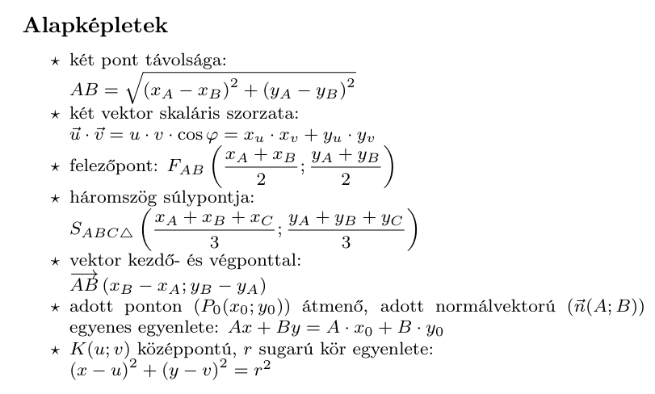
Normálvektor
Egy egyenes normálvektora bármely, az adott egyenesre merőleges, nullvektortól
különböző vektor.
Jele: 𝑛⃗⃗
(𝑛1; 𝑛2 ).
Ha az irányvektorból normálvektort akarsz csinálni:
Típusfeladat: Egyenes egyenlete két pontból
Feladat: Adott a P(2; -3) és a Q(6; 5) pont. Írd fel az egyenesük egyenletét normálvektor segítségével!
-
Irányvektor kiszámítása :
Vond ki a Q pont koordinátáiból a P pont koordinátáit!!
v =PQ-> Q - P = (6 - 2; 5 - (-3)) = (4; 8)
-
"Csere-bere" a normálvektorhoz:
Cseréld meg a két számot, és az egyiket szorozd meg -1-gyel!
v(4; 8) ➔ n(8; -4)(Itt most a másodikat váltottuk negatívra: ez lesz az A és a B az egyenletben.)
-
Behelyettesítés a receptbe:
Az egyenes egyenlete: Ax + By = Ax₀ + By₀
Használjuk az n(8; -4) vektort és a P(2; -3) pontot:
8 · x + (-4) · y = 8 · 2 + (-4) · (-3) -
Végezd el a szorzást:
8x - 4y = 16 + 12Pro tipp: Mivel minden szám osztható 4-gyel, egyszerűsíthetsz: 2x - y = 7
8x - 4y = 28
7. Függvények vizsgálata és egyenletek
Mi ez és mire jó?
Képzeld el a függvényt egy gépként: bedobsz egy számot (x), a gép csinál vele valamit a szabálya alapján, és kidob egy másik számot (y). A függvények grafikonjai segítenek vizuálisan megérteni a folyamatokat, az egyenleteket pedig sokszor könnyebb "leolvasni" egy rajzról, mint bonyolult képletekkel kiszámolni.
A kulcsfontosságú "építőkockák" és szabályok
Ezeket az alapfüggvényeket úgy kell felismerned, mint a tenyered!
- Egyenes arányosság (Lineáris függvény): Képlete: y = mx + b. Képe egy
egyenes. Ha az x nő, az y is egyenletesen nő/csökken (pl. minél több kiflit veszel, annál többet
fizetsz).
- m (meredekség): Azt mutatja, hogy ha az x-tengelyen jobbra lépsz 1-et, mennyit kell fel (pozitív m) vagy le (negatív m) lépned.
- b (y-metszet): Megmutatja, hol metszi az egyenes az y-tengelyt.
- Fordított arányosság (Lineáris törtfüggvény): Képlete: y = c / x (alapesetben y = 1/x). Képe egy hiperbola (két görbe ág). Ha az x nő, az y ugyanannyiad részére csökken (pl. 2 munkás 10 óra alatt végez, 4 munkás feleannyi, azaz 5 óra alatt). Soha nem érinti a tengelyeket!
- Másodfokú függvény: Képlete: y = x2. Képe az U-alakú parabola.
- Abszolútérték-függvény: Képlete: y = |x|. Képe egy V-alak. Mindent "pozitívvá tesz", ezért pattan vissza az x-tengelyről.
Összetett függvénytranszformációk (Az eltolások titka)
Bármilyen bonyolult függvényt meg tudsz rajzolni az alábbi alapszabállyal, amit én "Belső ellenség, külső barát" szabálynak hívok:
- Zárójelen / Abszolútértéken / Törtvonalon BELÜL: Ez az x-tengelyen
(vízszintesen) tolja el a grafikont, de ellentétesen, mint gondolnád!
Pl. az y = (x - 3)2 nem balra, hanem JOBBRA tolja 3-mal a parabolát! - Zárójelen KÍVÜL: Ez az y-tengelyen (függőlegesen) tologat, teljesen
logikusan!
Pl. az y = x2 + 4 a parabolát FEL tolja 4-gyel. - Példa: Az y = |x + 2| - 5 egy V-alak, aminek a csúcsa 2-vel balra és 5-tel lefelé van (a -2; -5 pontban).
Típusfeladat: Abszolútértékes egyenlet(őtlenség) grafikus megoldása
Feladat (Érettségi klasszikus): Oldja meg a valós számok halmazán grafikus módszerrel: |x - 2| - 3 ≤ 1
- A bal oldal megrajzolása: Vedd a bal oldalt egy önálló függvényként: f(x) =
|x - 2| - 3.
- Alapja az |x| (V-alak).
- Belső transzformáció: "- 2", tehát toljuk jobbra 2-vel.
- Külső transzformáció: "- 3", tehát toljuk le 3-mal.
- A V-alak csúcsa a (2; -3) pontban lesz. Rajzold fel (minden lépés 1-et megy fel és 1-et jobbra/balra)!
- A jobb oldal megrajzolása: A jobb oldal egy vízszintes egyenes: g(x) = 1. Húzz egy vonalat az y-tengely 1-es magasságánál!
- A metszéspontok leolvasása (Egyenlet megoldása): Keresd meg, hol metszi a V-alak a vízszintes vonalat. Ha jól rajzoltál, leolvashatod, hogy az x = -2 és az x = 6 pontoknál találkoznak. (Ha egyenlőség lett volna a feladatban, itt végeztünk is!)
- Az egyenlőtlenség megoldása: A feladat azt kéri, hogy a V-alak (bal oldal) kisebb vagy egyenlő legyen, mint a vonal (jobb oldal). Azaz: Hol van a V-alak a vonal ALATT? A grafikonról ordít, hogy a -2 és a 6 közötti szakaszon.
- Végeredmény felírása: A megoldás halmaza: x ∈ [-2 ; 6] (vagy -2 ≤ x ≤ 6).
- Ne keverd az eltolásokat! (Belső vs. Külső)
A szabály: A zárójelen (vagy abszolútértéken) belüli szám mindig az x-tengelyen tol (fordított irányba), a külső szám pedig az y-tengelyen (logikus irányba).
- Értelmezési Tartomány (ÉT) vs. Értékkészlet (ÉK): Melyik melyik
tengely?
A szabály: Az ÉT mindig az x-tengely (vízszintes)-tehát hogy mely helyeken Értelmezzük, az ÉK mindig az y-tengely, -tehát hogy milyen Értékeket vesz fel a függvény. (függőleges).
Miért van ez így? Gondolj a szavak jelentésére! Az "Értelmezési tartomány" azokat a számokat jelenti, amiket be szabad dobni a függvény-gépbe (ez a bemenet, az x). Az "Értékkészlet" pedig azokat az értékeket jelenti, amiket a gép készletként kidob magából (ez a kimenet, az y). - A meredekség (m) lépcsős trükkje:
A szabály: Ha egy egyenes egyenlete y = -2x + 5, a meredekség -2. Rajzolásnál ez azt jelenti, hogy 1-et lépsz jobbra, és 2-t lépsz LE.
y=mx+b képletből könnyedén kiolvasható. - Mentsd meg a pontokat behelyettesítéssel!
A szabály: Ha grafikusan oldasz meg egyenletet, a leolvasott x-értéket mindig helyettesítsd vissza az eredeti képletbe!
Miért van ez így? Egy vastagabb ceruzavonal vagy egy megcsúszott vonalzó miatt könnyű félreolvasni a metszéspontot a rácspapíron. A rajzod lehet csalóka, de az algebra sosem hazudik. Ha a papíron úgy tűnik, hogy a két grafikon az x = 6-nál metszi egymást, ellenőrizd: |6 - 2| - 3 = |4| - 3 = 1. Ha kijön a jobb oldal, nyugodtan hátra dőlhetsz, a megoldásod hibátlan.
8. Síkgeometria: Hogyan zsebeljük be az ingyen pontokat?
Hogyan ismered fel a feladatot?
Gyanús, hogy síkgeometriával van dolgod, ha oldalhosszokat, szögeket vagy területet kérnek, és van egy ábra (vagy neked kell rajzolnod egyet). A titkos recept: Rajzolj, jelölj be mindent, amit tudsz, és keresd a derékszögeket!
1. Derékszögű háromszögek
A legbarátságosabb eszközök:
- Pitagorasz-tétel: Ha csak oldalak kellenek. a² + b² = c²
- Szögfüggvények: Ha képbe jönnek a szögek is (sin, cos, tg).
- Thalész-tétel: Ha egy körben a körátmérő a háromszög átfogója, az a háromszög derékszögű!
Tétel: Ha egy kör átmérőjének két végpontját összekötjük a kör kerületének bármely más pontjával, akkor derékszögű háromszöget kapunk.
2. Általános háromszögek
Ha nincs derékszög, jönnek a nehézágyúk:
- Szinusztétel: Párban gondolkodj! Oldal és a szemközti szög aránya állandó.
- Koszinusztétel: Olyan, mint a Pitagorasz, csak van egy "farkinca" a végén: c² = a² + b² - 2ab·cosγ
Négyszögek:
paralelogramma,trapéz, rombusz..
Paralelogramma: A párhuzamosság bajnoka
Miből áll össze?
A paralelogramma olyan négyszög, aminek a szemközti oldalai párhuzamosak és egyenlőek. De amire az érettségin tényleg figyelned kell:
- Az átlók felezik egymást: Ez a megmentőd, ha koordinátageometriáról vagy vektorokról van szó!
- Szomszédos szögek: Bármely két egymás melletti szög összege 180°.
- Szemközti szögek: Ezek pedig pont ugyanakkorák.
Területszámítás 1.
Ha van magasságod:
Területszámítás 2.
Ha két oldal és egy szög van:
Mire figyelj? (Típushiba)
Sokan elfelejtik, hogy a paralelogramma területe nem a · b. Ez csak
a
téglalapnál igaz, ahol a két oldal pont merőleges egymásra (vagyis az egyik oldal maga a
magasság).
Általános esetben mindig kell a magasság vagy a szinusz!
Trapéz és társai: A trükk
Ha a feladat trapézról vagy paralelogrammáról szól, ne ess pánikba! Húzz be egy segédvonalat (általában a magasságot), és válaszd le vele a derékszögű háromszögeket. Onnantól már a sima Pitagorasz is elég lehet.
Szögek a szárakon
Jegyezd meg jól: a trapéz alapjai párhuzamosak. Emiatt az egy száron fekvő szögek (amiket a szár és a két alap bezár) kiegészítik egymást 180 fokra.
β + γ = 180°
Ami mindig "kimegy a fejekből":
- Rombusz átlói: Mindig merőlegesek egymásra és felezik a szögeket. Ha rombusz van, keress derékszögű háromszöget az átlók találkozásánál!
- Középvonal: Az oldalak felezőpontját összekötő szakasz.
- Háromszögnél: fele az alapnak és párhuzamos vele.
- Trapéznál: az alapok számtani közepe: k = (a + c) / 2.
- Magasságpont: A háromszög magasságvonalai egy pontban metszik egymást. .
Háromszög Nevezetes Vonalai
📏 Magasságvonal (m)
A csúcsból a szemközti oldalra húzott merőleges.
Tipp: Területszámításhoz nélkülözhetetlen!
↔️ Középvonal (k)
Két oldalfelezőt köt össze. Párhuzamos az alappal és feleakkora.
🎯 Súlyvonal (s)
Csúcs + szemközti oldalfelező pont. A súlypont 2:1 arányban osztja!
⚠️ Vigyázat, ne keverd!
- A Magasságvonal merőleges, de nem biztos, hogy felez.
- A Súlyvonal felez, de nem biztos, hogy merőleges.
- A Középvonal nem érinti a csúcsokat!
Háromszög köré írható kör
A kör középpontját úgy kapjuk meg, hogy megrajzoljuk a háromszög oldalfelező merőlegeseit. Ezek egy pontban metszik egymást: ez lesz a köré írt kör középpontja.
A köré írt kör sugara a középpont és bármelyik csúcs távolsága lesz.
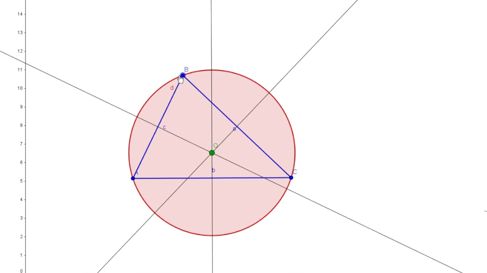
Háromszögbe írható kör
A beírt kör középpontja a háromszög szögfelező egyeneseinek a metszéspontja.
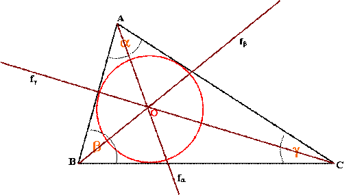
| Mit felez? | Melyik körhöz kell? |
|---|---|
| Oldalt (merőlegesen) | Köré írható kör |
| Szöget | Beírható kör |
Hasznos oldalak a függvénytáblázatban:
- Sárga: 38-40. (Területek), 45. (Trigonometria)
- Fehér: 54., 59-60., 62. oldal(Trigonometria)
9. Térgeometria
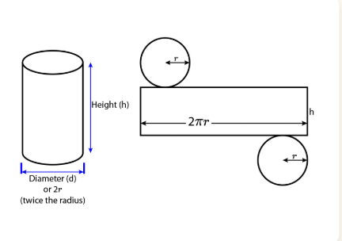
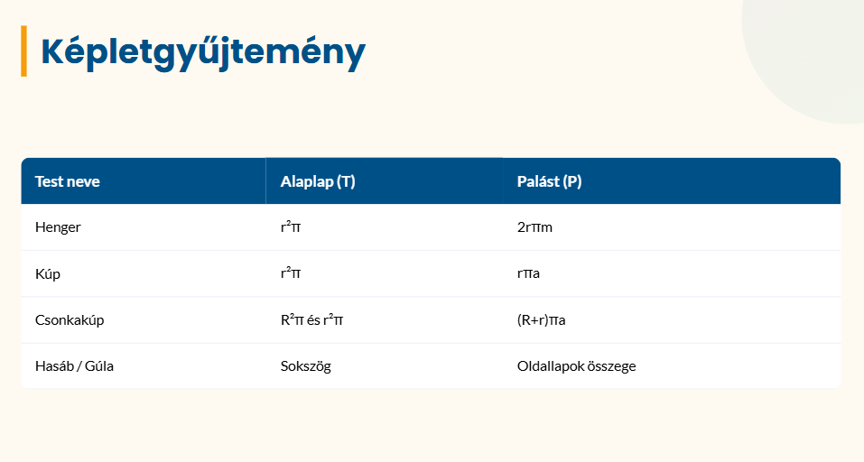
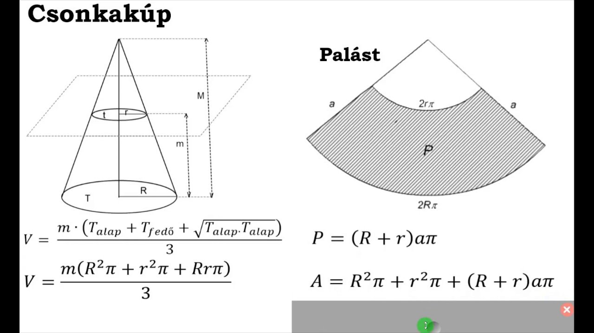
Kidolgozott feladatok
Négyzet alapú gúla
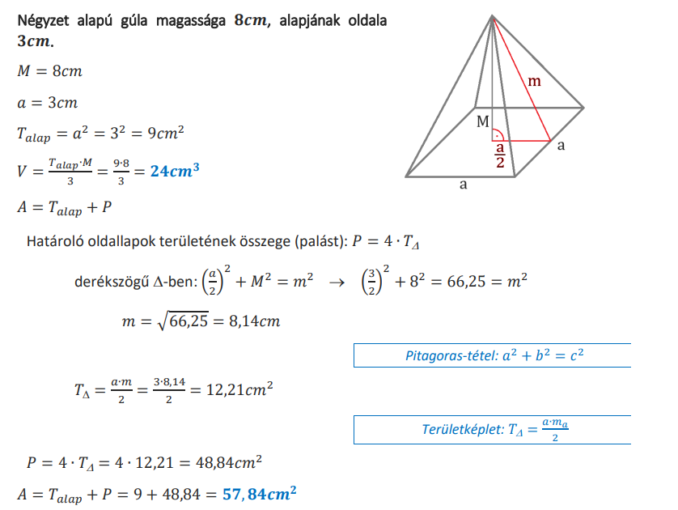
Kúp
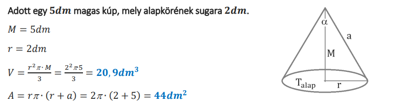
Csonkakúp
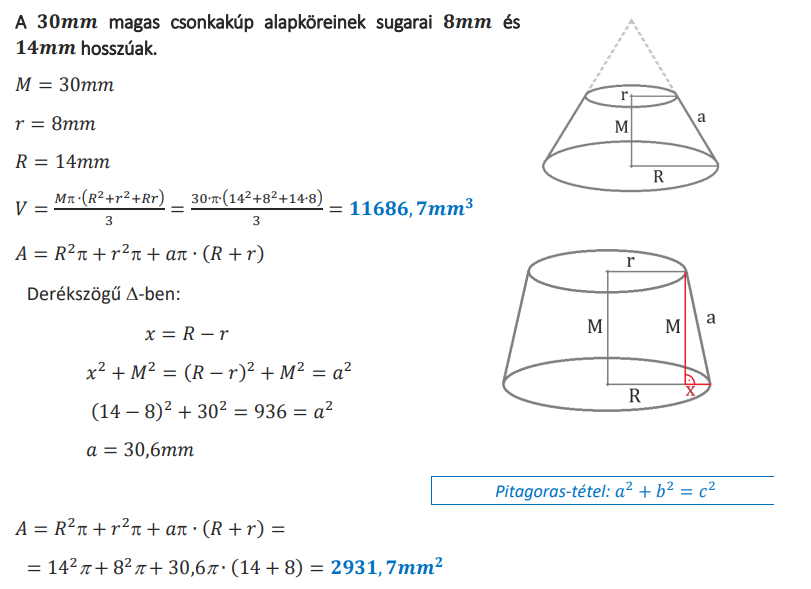
10. Hatványozás azonosságai
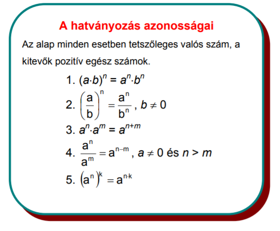
📐 Trigonometria (Szögfüggvények)
Függvénytáblázat: Sárga 45. oldal | Fehér 62. oldal
Derékszögű háromszög
- sin α = szemközti / átfogó
- cos α = melletti / átfogó
- tg α = szemközti / melletti
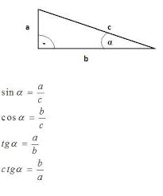
Bármilyen más háromszög
Szinusztétel: \(\frac{a}{\sin \alpha} = \frac{b}{\sin \beta}\)
Koszinusztétel: \(c^2 = a^2 + b^2 - 2ab \cdot \cos \gamma\)
💡 Profi Tipp
Ha a háromszög mind a három oldala megvan, és szöget keresel, mindig a Koszinusztétellel kezdj! Ez egyértelműen megadja a szöget.
🧩 Teljes négyzetté alakítás fortélyai
Mi a cél?
A célunk, hogy egy másodfokú kifejezést, például az \(x^2 + bx + c\) alakot átírjuk \((x + d)^2 + e\) alakra. Ez elengedhetetlen a függvények ábrázolásánál és a kör egyenleténél.
A 3 lépéses recept
-
Nézd az x-es tagot: Vedd az \(x\) előtti szám (együttható)
felét.
Példa: \(x^2 + 6x\)-nél a 6 fele a 3. - Írd fel a négyzetet: Készíts egy zárójelet ezzel a számmal: \((x + 3)^2\).
-
Korrigálj: Ha a zárójelet kibontanád (\(x^2 + 6x + 9\)), kapsz egy
felesleges számot (a 3 négyzetét, a 9-et). Ezt le kell vonnod a végén!
Tehát: \(x^2 + 6x = (x + 3)^2 - 9\)
📝 Kidolgozott példa: \(x^2 - 8x + 10\)
1. Az x előtti szám a -8. Ennek a fele: -4.
2. Felírjuk a négyzetet: (x - 4)².
3. Korrekció: le kell vonnunk a (-4)²-et, azaz 16-ot: (x - 4)² - 16.
4. Ne felejtsd el az eredeti +10-et a végéről: (x - 4)² - 16 + 10.
VÉGEREDMÉNY: (x - 4)² - 6
🔢 Számrendszerek és Átváltások
1. Bármiből ➔ Tízesbe
Példa: 20345 ➔ n10
Használjuk a helyiérték-táblázatot (most az alap az 5, mert 5-ös számrendszerből váltunk):
1. Helyiértékek: (mivel 4-jegyű a szám, mindig 1-gyel csökkentett kitevővel kezdjük,
egészen a 0 hatványig)
53=125...
52=25,
51=5,
50=1,
2. A szorzások elvégzése:
- 2 × 125 = 250
- 0 × 25 = 0
- 3 × 5 = 15
- 4 × 1 = 4
3. Összeadás:
250 + 0 + 15 + 4 = 26910
2. Tízesből ➔ Bármibe
Módszer: Maradékos osztás az új számrendszer alapjával, amíg el nem fogynak a számok. A maradékokat lentről felfelé olvassuk ki!
Példa: 25 átváltása kettesbe:
- 25 : 2 = 12, maradék: 1
- 12 : 2 = 6, maradék: 0
- 6 : 2 = 3, maradék: 0
- 3 : 2 = 1, maradék: 1
- 1 : 2 = 0, maradék: 1
Eredmény: 110012
Példa: 33211 átváltása 8-asba:
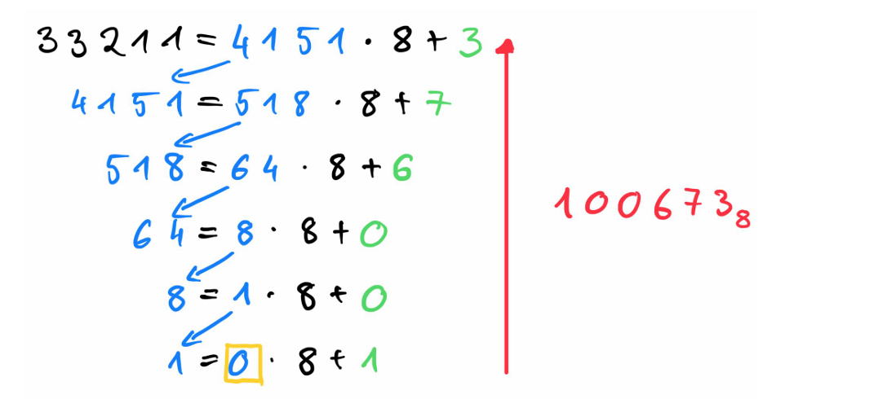
🔢 Számhalmazok hierarchiája
- ℕ Természetes számok: 0, 1, 2, 3...
- ℤ Egész számok: ..., -2, -1, 0, 1, 2...
- ℚ Racionális számok: Felírhatók törtként (p/q).
- ℚ* Irracionális számok: Pl. √2, π, e. (ezek nem írhatók fel törtként)
- ℝ Valós számok: A számegyenes összes száma.
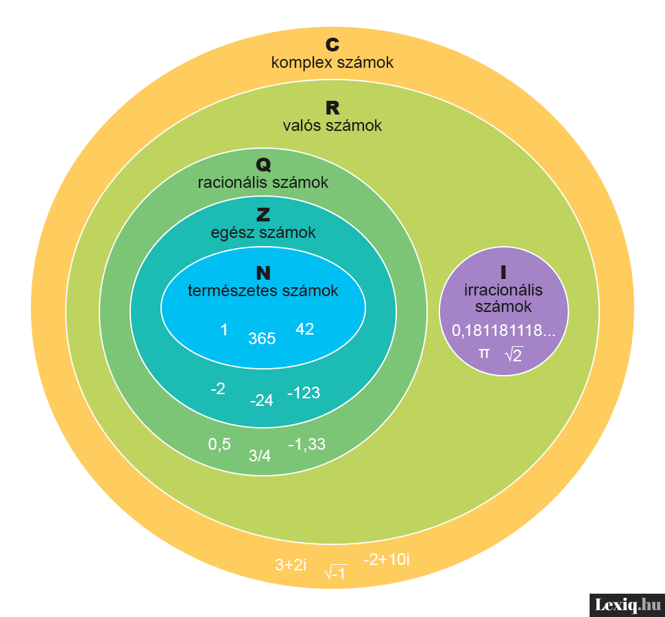
📝 Gyakorlófeladatok
Válaszd ki a témakört, próbáld meg egyedül megoldani a feladatokat, aztán ellenőrizd magad!
📍 Koordinátageometria
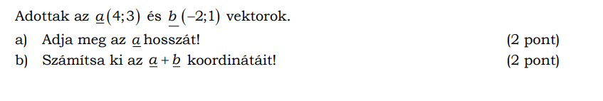
Kattints a megoldásért!
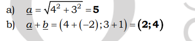
Számítsa ki az A (1; 0) és B (5; -3) pontok távolságát!
Kattints a megoldásért!
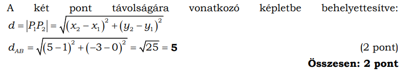
Írja fel annak az egyenesnek az egyenletét, amely áthalad az origón és merőleges az A(−1;2) és a B(2;7) pontok által meghatározott egyenesre!
Kattints a megoldásért!
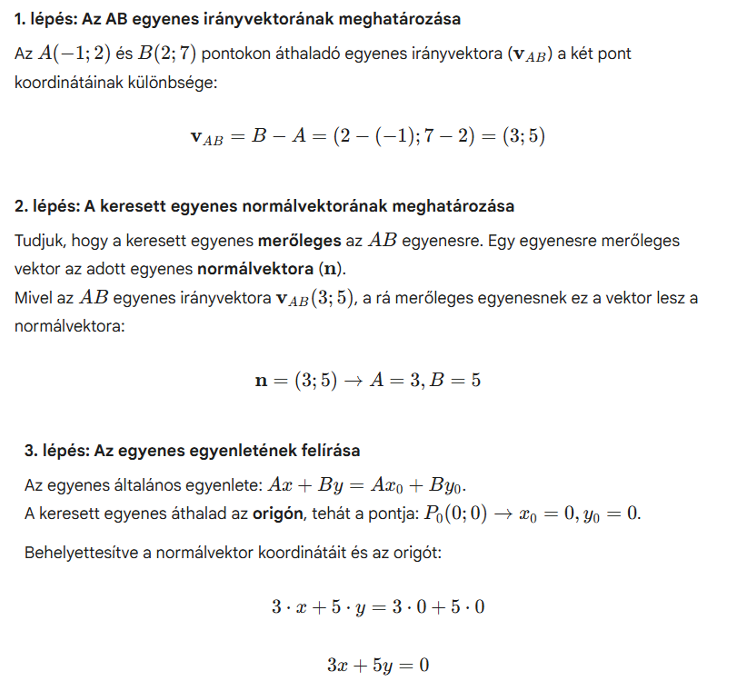
📈 Függvények
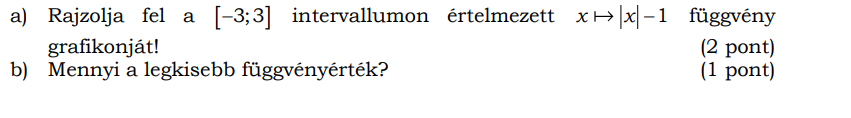
Kattints a megoldásért!
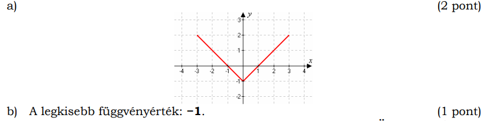
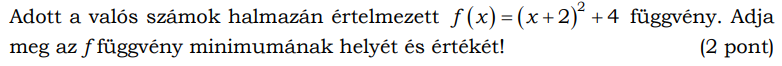
Kattints a megoldásért!
A minimum helye: -2 (1 pont)
A minimum értéke: 4 (1 pont)
Magyarázat:
A kulcs az (x + 2)^2 kifejezés. Bármilyen valós számot is emelsz négyzetre, az eredmény soha nem lesz negatív. A négyzetes tag legkisebb lehetséges értéke tehát a 0.
Mivel a négyzetes kifejezés legkisebb értéke 0, a teljes függvény akkor lesz a legkisebb, amikor ez a rész nullává válik: 0 + 4 = 4.
A minimum helye: Azt keressük, ahol x+2 = 0, azaz x = -2.
Melyik függvény rendeli a -2-höz a -1-et az alábbiak közül?
f(x) = 2x + 3
b(x) = |x| - 3d
c(x) = x^2 - 5
Kattints a megoldásért!
A kérdés azt jelenti: melyik képlet teljesül, ha beírom az x = -2-t, és akkor az
eredmény -1
lesz?
Megoldás:
b(x) = |x| - 3d
🎲 Valószínűségszámítás
Egy dobozban 12 piros és 8 kék golyó van. Kihúzunk egyszerre kettőt. Mennyi az esélye, hogy mindkettő kék lesz?
Kattints a megoldásért!
Összes eset: \(\binom{20}{2} = 190\)
Kedvező eset: \(\binom{8}{2} = 28\)
P(A): \(\frac{28}{190} \approx \mathbf{0,147}\) (kb. 14,7%)
Két szabályos dobókockával egyszerre dobva mennyi annak a valószínűsége, hogy két különböző számot dobunk?
Kattints a megoldásért!
Az első kockával bármit dobhatunk (6 lehetőség). A második kockával csak 5-félét (bármit, csak az elsőt nem): $$k = 6 \cdot 5 = 30$$
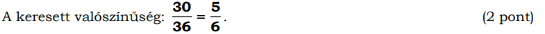
A háromjegyű pozitív egész számok közül véletlenszerűen kiválasztunk egyet. Mennyi annak a valószínűsége, hogy a kiválasztott szám számjegyei különbözők?
Kattints a megoldásért!
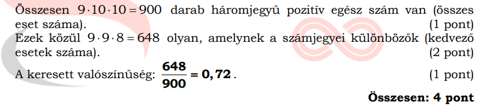
📥 Letölthető Összefoglalók (PDF)
Vidd magaddal a tudást! Elmélet és gyakorló feladatok egy helyen.